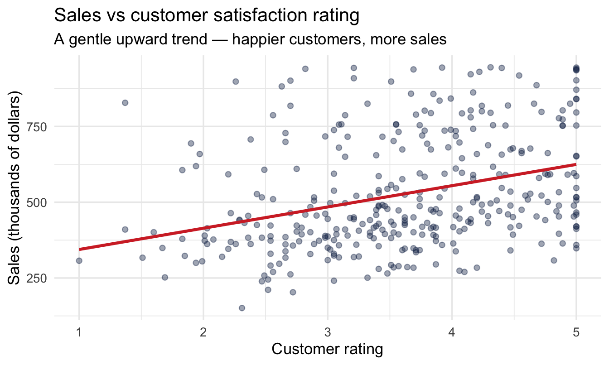
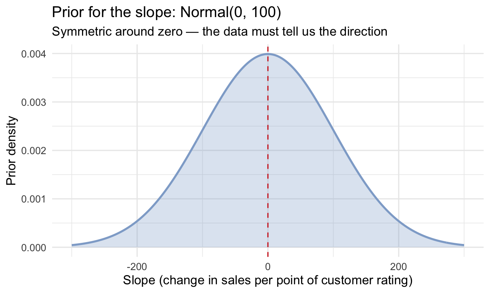
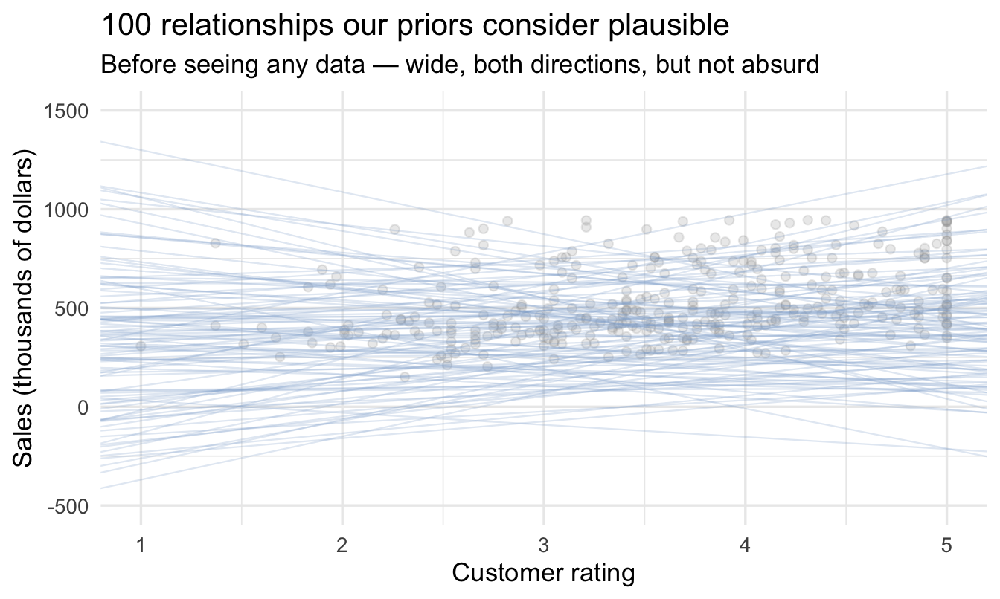
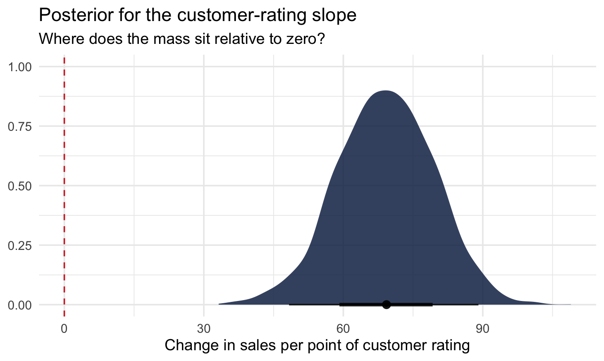
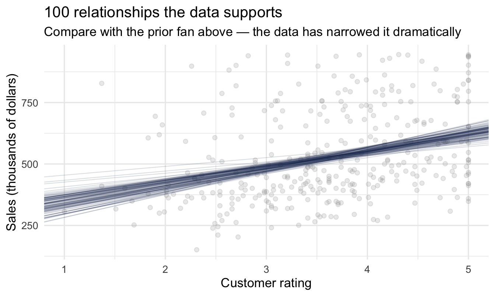
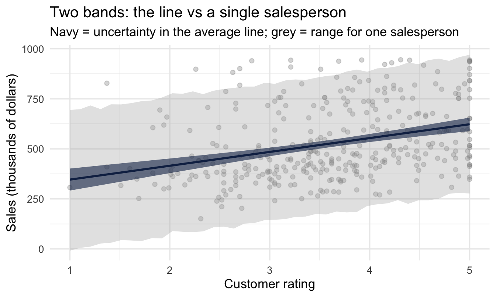
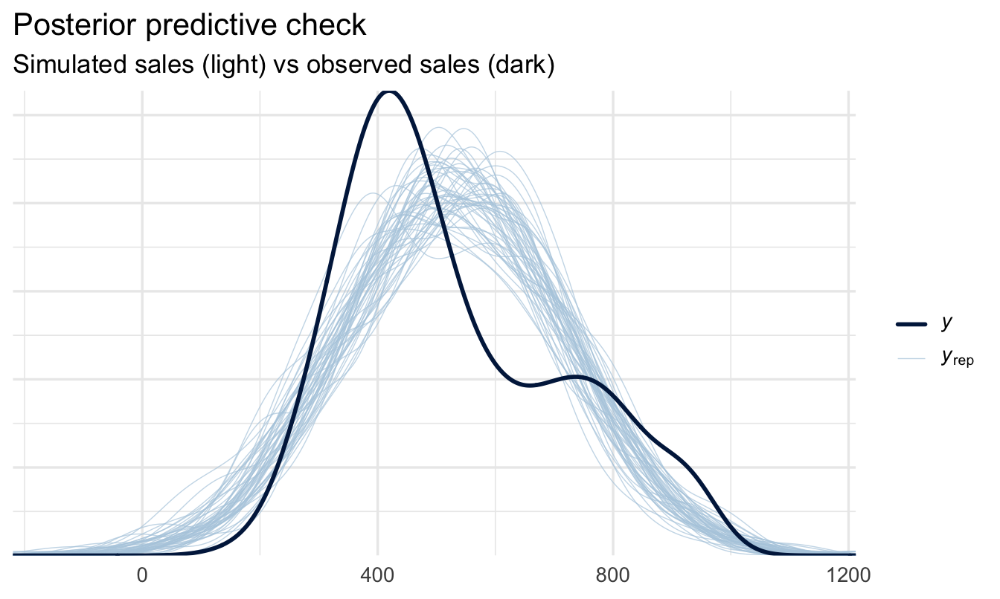

library(tidyverse)
library(peopleanalyticsdata)
library(brms)
library(tidybayes)
library(ggdist)
theme_set(theme_minimal(base_size = 13))
set.seed(2026)
data("salespeople", package = "peopleanalyticsdata")
# Chapter 1 found a single missing value in each of `sales`,
# `customer_rate` and `performance`; dropping those rows here keeps
# the rest of this chapter's code simple.
salespeople <- salespeople |> drop_na(sales, customer_rate, performance, promoted)
# Centred version of the predictor — see "Why we centre" below.
mean_rate <- mean(salespeople$customer_rate)
salespeople <- salespeople |>
mutate(customer_rate_c = customer_rate - mean_rate)6 Bayesian Regression: Explaining & Predicting
Welcome back
So far we’ve estimated single numbers — a rate, an average. Today we take the biggest step in the book so far: explaining one variable with another.
Why you’d want to
Almost every question a business asks about its people is really a question about a relationship between two things:
- Do people with higher engagement scores stay longer?
- Does the hiring source a candidate came from affect how quickly they reach full productivity?
- Do larger teams perform worse than small ones, and from what size does it start to matter?
- Is the pay gap between two groups still there once you account for role and tenure?
None of those can be answered by a single average. Each one asks how an outcome moves as something else changes — and that is exactly what regression measures. It’s the tool underneath most quantitative People Analytics work, and once you have it, most of the rest of this book is variations on it.
Where this one comes from
Your VP of Sales has taken the promotion analysis well, and she’s back with something she wants to spend money on.
“The best-rated reps are our best sellers. I want to put the whole team through customer-service training.”
There’s a proposal attached, and it isn’t cheap: $1,500 per person, for every salesperson on the team. So the question isn’t really whether better-rated salespeople sell more — she has watched them for a decade and she’s almost certainly right about the direction. The question is how much, because a number is the only thing that can be set against a cost.
For each extra point of customer rating, how much more does a salesperson sell — and how likely is it that the gain covers the $1,500?
Notice the shape of that second half. It isn’t a question about the data, it’s a question about a threshold: there is some slope below which the training loses money, and what your VP actually wants to know is the probability we’re above it. Hold onto that — we’ll come back and answer it once we have a posterior, and it turns out to cost one extra line of code.
NoteA yes/no question is the wrong question
The instinctive framing — “is there a relationship between rating and sales?” — is answerable with a word, and the word is almost always “yes” if you collect enough data. It’s also useless to someone holding a budget.
This is the estimation-over-testing argument from Chapter 5, arriving in the place you’ll meet it most often. Regression’s real output isn’t a verdict on whether an effect exists. It’s a magnitude with honest uncertainty attached — and it’s the uncertainty that tells your VP whether the business case survives its own worst-case scenario.
What you’ll be able to do by the end
- Fit a Bayesian linear regression with
brms - Interpret a slope as a posterior distribution — a magnitude, not a verdict
- Centre a predictor so the intercept means something
- Turn a posterior into a break-even probability a budget-holder can act on
- Distinguish parameter uncertainty from prediction uncertainty
- Check the model with a posterior predictive check
6.1 Setup
6.2 Look before you model
The first step of any analysis is to look at the data. Not summarise it — look at it. A scatter plot takes ten seconds and will tell you things no table can: whether the relationship is roughly a straight line or a curve, whether it’s tight or loose, whether a handful of extreme points are about to drag your answer around, and whether the variable is even measured the way you assumed.
Fitting a model before plotting is how analysts end up confidently describing a relationship that isn’t the shape they think it is.
Each point below is one salesperson.
ggplot(salespeople, aes(x = customer_rate, y = sales)) +
geom_point(alpha = 0.4, colour = "#122a52") +
geom_smooth(method = "lm", formula = y ~ x,
1 colour = "#d32f2f", se = FALSE) +
labs(title = "Sales vs customer satisfaction rating",
subtitle = "A gentle upward trend — happier customers, more sales",
x = "Customer rating", y = "Sales (thousands of dollars)")- 1
-
That red line is a classical least-squares fit —
lm(), dropped in bygeom_smooth(). Notese = FALSE: we’ve explicitly switched off even the uncertainty band it would have offered.

6.2.1 Why not just stop there?
The red line is a perfectly good answer to “which way does this go?”, and it took no effort. Reaching for it early is a good habit, not a guilty one — it’s fast, it aids comprehension, and later it gives you something to sanity-check your Bayesian result against.
But look at what it is: one line. A single best guess, drawn with total confidence, through a cloud that clearly permits a range of lines. Tilt it slightly and it would still pass respectably through those points. That range of defensible tilts is precisely what your VP needs, because the business case depends on whether the effect is 70 per point or 50.
ImportantTwo honest observations
- There is an upward trend — the red line slopes up.
- The cloud is noisy — customer rating is clearly not the only thing driving sales.
Both are true at once. Regression’s job is to put a number on the trend and an honest measure of uncertainty around it. The rest of this chapter is about replacing that one confident line with every line the data will support, weighted by how well each one does.
6.3 The model
6.3.1 Fitting a line through the cloud
\text{sales}_i \sim \text{Normal}(\mu_i,\ \sigma), \qquad \mu_i = \alpha + \beta \times (\text{customer\_rate}_i - \overline{\text{customer\_rate}})
- α (intercept) — average sales for a salesperson with an average customer rating
- β (slope) — how much sales change per extra point of customer rating
- σ — how much individual salespeople scatter around the line
Note
β is the one we came for. It’s the number in your VP’s business case.
6.3.2 Why we centre
That subtraction in the formula is doing real work, and it’s a habit worth forming now.
Written the obvious way — \mu_i = \alpha + \beta \times \text{customer\_rate}_i — the intercept α is “expected sales when customer rating is zero”. But ratings in this dataset run from 1 to 5. A rating of zero doesn’t exist and never could. The model will still report a number for it, obtained by running the line off the left-hand edge of the data, and that number is meaningless.
Subtract the mean rating from every value first and the problem disappears. Now the predictor is zero at the average rating, so α becomes “what a typically-rated salesperson sells” — a quantity your VP can recognise, argue with, and sanity-check. The slope β is completely unaffected; centring shifts where the line is anchored, not how steep it is.
ImportantSomething
brms does quietly, that centring makes visible
There’s a second reason to do this explicitly, and it will save you a confusing afternoon at some point.
brms centres your predictors internally anyway, for reasons of sampling efficiency. One consequence catches people out: a prior you set on class = Intercept applies to the centred intercept — the expected outcome at the mean of the predictors — while the Intercept reported in summary() is converted back to the raw scale, i.e. the outcome at predictor zero.
On an uncentred model those are two different numbers, and you can spend a while trying to work out why the prior you set at 400 produced a posterior sitting near 270. Centring the predictor yourself collapses the two into one, and what you set is what you read.
(If you ever need the raw-scale intercept to be the one with the prior on it, the formula syntax is y ~ 0 + Intercept + x.)
6.3.3 In brms
brm(sales ~ 1, ...) # last chapter: just a mean
brm(sales ~ customer_rate_c, ...) # this chapter: a mean that depends on ratingEverything you learned about priors, posteriors and intervals carries straight over.
TipWorth naming: this is the recipe for the rest of the book
A formula, a family, and some priors — that’s the whole thing brm() needs. Nothing about how you fit a Bayesian model is about to change, no matter how different the outcome gets. A yes/no outcome, a count, a time-to-event, a Likert scale — every one of those, later in this book, is still just brm(formula, family = ..., prior = ...). Only the formula, the family, and the priors change; the workflow around them never does. Worth noticing now, because it stops being obvious once you’ve seen ten different-looking outcomes in a row.
6.3.4 Three priors now, not two
Chapter 5’s model had two unknowns. This one has three, and the new arrival — the slope — gets class = b, the class every predictor coefficient belongs to.
- 1
- Unchanged from Chapter 5, and now unambiguous: thanks to centring, this really is our belief about sales for an average-rated salesperson.
- 2
- The slope. Centred on zero — we’re not telling the model which way the relationship runs — with a standard deviation of 100, which says a swing of more than a couple of hundred thousand dollars per rating point would be surprising.
- 3
- Unchanged: the spread of individual salespeople around the line.
tibble(beta = seq(-300, 300, length.out = 400)) |>
mutate(density = dnorm(beta, mean = 0, sd = 100)) |>
ggplot(aes(beta, density)) +
geom_area(fill = "#8fabd0", alpha = 0.30) +
geom_line(colour = "#8fabd0", linewidth = 1) +
geom_vline(xintercept = 0, colour = "#d32f2f", linetype = "dashed") +
labs(title = "Prior for the slope: Normal(0, 100)",
subtitle = "Symmetric around zero — the data must tell us the direction",
x = "Slope (change in sales per point of customer rating)", y = "Prior density")
NoteZero-centred is not the same as no opinion
Putting the slope prior on zero looks like a strong claim that there’s no effect. It isn’t. It’s a claim about direction — that we’re not going to prejudge the sign — combined with a claim about plausible magnitude, which is what the 100 controls.
A prior centred on zero is easily overruled by data that disagrees, as you’re about to see. What it does buy you is protection against the model taking a small, noisy pattern and reporting an implausibly enormous effect.
6.3.5 What do these priors imply?
Chapter 5 checked a prior by simulating datasets from it. For a regression there’s a more direct version: simulate lines.
This is the prior predictive check from Chapter 5, in its natural home: a prior on a slope means very little until you see the relationships it implies.
set.seed(606)
prior_lines <- tibble(
1 alpha = rnorm(100, mean = 400, sd = 200),
beta = rnorm(100, mean = 0, sd = 100)
)
ggplot(salespeople, aes(customer_rate, sales)) +
geom_point(alpha = 0.2, colour = "grey60") +
geom_abline(data = prior_lines,
2 aes(intercept = alpha - beta * mean_rate,
slope = beta),
colour = "#8fabd0", alpha = 0.25, linewidth = 0.4) +
coord_cartesian(xlim = c(1, 5), ylim = c(-500, 1500)) +
labs(title = "100 relationships our priors consider plausible",
subtitle = "Before seeing any data — wide, both directions, but not absurd",
x = "Customer rating", y = "Sales (thousands of dollars)")- 1
-
Drawing straight from the two priors, exactly as written above.
brm(..., sample_prior = "only")would do the same thing through the model; by hand is faster and shows there’s no trick to it. - 2
- Converting back to the raw rating scale for plotting. Our line is \alpha + \beta(x - \bar{x}), which rearranges to an intercept of \alpha - \beta\bar{x} against plain x.

Important
That fan of lines is what we’re claiming to believe before the data speaks. It’s wide, it slopes both ways, and it comfortably contains anything the data might reasonably show — but it doesn’t contain lines implying a rating point is worth half a billion dollars. That’s what weakly-informative looks like for a slope.
6.4 Fit and interpret
fit_reg <- brm(
sales ~ customer_rate_c, data = salespeople, family = gaussian(),
prior = priors,
chains = 4, iter = 2000, seed = 6, refresh = 0
)
summary(fit_reg) Family: gaussian
Links: mu = identity
Formula: sales ~ customer_rate_c
Data: salespeople (Number of observations: 350)
Draws: 4 chains, each with iter = 2000; warmup = 1000; thin = 1;
total post-warmup draws = 4000
Regression Coefficients:
Estimate Est.Error l-95% CI u-95% CI Rhat Bulk_ESS Tail_ESS
Intercept 526.83 9.21 508.75 544.97 1.00 4066 2894
customer_rate_c 69.15 10.36 48.33 89.06 1.00 4278 2888
Further Distributional Parameters:
Estimate Est.Error l-95% CI u-95% CI Rhat Bulk_ESS Tail_ESS
sigma 174.76 6.69 162.04 188.37 1.00 4145 3105
Draws were sampled using sampling(NUTS). For each parameter, Bulk_ESS
and Tail_ESS are effective sample size measures, and Rhat is the potential
scale reduction factor on split chains (at convergence, Rhat = 1).Same call as Chapter 5, same argument order, one extra term in the formula. That’s the whole difference.
6.4.1 The slope is a distribution
fit_reg |>
spread_draws(b_customer_rate_c) |>
ggplot(aes(x = b_customer_rate_c)) +
stat_halfeye(fill = "#122a52", alpha = 0.85) +
geom_vline(xintercept = 0, linetype = "dashed", colour = "#d32f2f") +
labs(title = "Posterior for the customer-rating slope",
subtitle = "Where does the mass sit relative to zero?",
x = "Change in sales per point of customer rating", y = NULL)
fit_reg |>
spread_draws(b_customer_rate_c) |>
mean_qi(b_customer_rate_c, .width = 0.95)# A tibble: 1 × 6
b_customer_rate_c .lower .upper .width .point .interval
<dbl> <dbl> <dbl> <dbl> <chr> <chr>
1 69.1 48.3 89.1 0.95 mean qi That interval is the sentence your VP is waiting for: each additional point of customer rating is worth roughly this much in sales, and we’re 95% confident the true figure lies between these two numbers.
6.4.2 Does it pay for itself?
The interval is the honest answer to the analytical question. It is not yet an answer to the business question, because the business question has a price tag in it.
So do the arithmetic the other way round. Rather than asking what the slope is and hoping it’s big enough, ask how big it would have to be for the training to wash its face — and then ask the posterior how likely that is.
Three numbers turn the cost into a threshold on the slope:
- 1
- $1,500 per salesperson, in the thousands-of-dollars units the model works in.
- 2
- How much the training is expected to lift a rep’s customer rating. This is not in the data — it’s an assumption, and we’ll come back to it.
- 3
- Extra sales aren’t extra profit. Only the contribution margin covers the cost.
- 4
- The slope at which benefit exactly equals cost. Below this, the programme destroys value.
- 5
- The proportion of posterior draws above the threshold — which, because the posterior is a probability distribution, is the probability the training pays for itself.
# A tibble: 1 × 2
break_even_slope p_pays_for_itself
<dbl> <dbl>
1 60 0.808That last line is doing the same trick as p_above_520 in Chapter 5, pointed at a decision instead of a description. And the answer is a sentence with no statistics in it at all: “given what we know about the relationship, there’s roughly an 80% chance this training returns more than it costs.”
ImportantWhich number the decision actually rests on
Look again at where the uncertainty in that answer comes from. The slope is estimated from 350 salespeople and is pinned down reasonably well. The 0.1-point uplift is a guess — nobody has measured it, and halving it doubles the break-even slope.
That’s a useful thing to discover, because it tells you where to spend your next hour: not on a better model, but on a better estimate of what the training actually does. Chapter 23 is about getting numbers like that out of the people who hold them.
One more caveat worth saying out loud, because a break-even calculation quietly assumes it: the slope describes an association between rating and sales among current salespeople. Treating it as what would happen if you intervened to raise ratings is a causal claim the data alone doesn’t support. Worth stating plainly in the recommendation rather than leaving the reader to assume it.
Stating it plainly is the minimum. Chapter 21 is about what it would take to say more — and, on this exact model, arrives at a different number for a different question.
One more decision worth noticing before we move on, because nothing in the output will point at it. We fitted a straight line. That was a choice, not a default, and for this data it is a reasonable one. It is not always: the relationship between tenure and attrition rises, falls and rises again, and a straight line through it produces a small average slope that describes nobody. Chapter 13 is about how to tell, and what to do instead.
TipWhere this goes next: Bayesian decision analysis
What we just did — take a posterior, apply a cost, read off a probability — is the doorstep of a whole field. Bayesian decision analysis carries on from here: attaching a value to each possible outcome, computing the expected value of each option you could choose, and putting a price on the information that would reduce your uncertainty before you commit.
It’s out of scope for this book, which stays on estimation rather than optimisation. But it’s a natural next step once you’re comfortable with posteriors, and it’s a recurring topic in my newsletter, Working Ideas, at andrewmarritt.substack.com.
6.4.3 Every line the data will support
The single red lm() line from earlier was one answer. Here are a hundred, drawn from the posterior:
set.seed(607)
posterior_lines <- fit_reg |>
spread_draws(b_Intercept, b_customer_rate_c) |>
1 slice_sample(n = 100)
ggplot(salespeople, aes(customer_rate, sales)) +
geom_point(alpha = 0.2, colour = "grey60") +
geom_abline(data = posterior_lines,
aes(intercept = b_Intercept - b_customer_rate_c * mean_rate,
slope = b_customer_rate_c),
2 colour = "#122a52", alpha = 0.15, linewidth = 0.4) +
labs(title = "100 relationships the data supports",
subtitle = "Compare with the prior fan above — the data has narrowed it dramatically",
x = "Customer rating", y = "Sales (thousands of dollars)")- 1
- 100 draws is plenty for a readable plot. Each one is a complete, internally consistent pair of intercept and slope — a whole candidate line, not two numbers picked independently.
- 2
- Every line has the same low opacity, deliberately. Each posterior draw is equally valid, so it would be wrong to draw some more boldly than others. The darkening you see where lines concentrate is honest overplotting: it’s density, and density is the thing you want to read.

ImportantThis is the picture worth keeping
Put this beside the prior fan. Same axes, same everything — but the data has taken a wide range of plausible relationships and narrowed it to a tight bundle. That narrowing is the learning, and the width of what’s left is the honest uncertainty in the answer.
It’s also what the red lm() line was hiding. One line implies one answer. The bundle shows you the set of answers still standing.
ImportantWhy “credibly positive” matters
If the 95% credible interval sits entirely above zero, you can say plainly: “we are confident the effect is real and positive — higher customer satisfaction goes with higher sales, and it’s about this big.” No p-values, no “fail to reject” — just a direct statement about the size of the effect.
NoteA different lens: this is the Bayesian version of
lm()
brm(sales ~ customer_rate_c) and classical lm(sales ~ customer_rate_c) will usually give very similar point estimates for the slope — this isn’t a case where the two philosophies typically disagree on the number. What you gain here: a full posterior distribution for the slope (rather than a point estimate and a standard error built on asymptotic theory), and a natural way to fold in prior knowledge when you have it. For a quick, well-behaved regression with plenty of data, reaching for lm() first to sanity-check your brms result is a perfectly reasonable habit.
6.5 Two kinds of uncertainty
6.5.1 The distinction that trips people up
Two very different questions:
“What is the average sales figure for a customer rating of 4.5?”
“What will this particular salesperson sell?”
Parameter uncertainty — how unsure we are about the line itself. Shrinks as data grows.
Prediction uncertainty — how unsure we are about one new salesperson. Stays wide, because individuals scatter no matter how much data we have.
6.5.2 See both at once
The distinction lives entirely in which of two tidybayes functions you call, so it’s worth reading this chunk slowly.
rating_grid <- tibble(
customer_rate_c = seq(from = min(salespeople$customer_rate_c),
to = max(salespeople$customer_rate_c),
length.out = 40)
) |>
1 mutate(customer_rate = customer_rate_c + mean_rate)
epred <- rating_grid |>
2 add_epred_draws(fit_reg) |>
mean_qi(.epred, .width = 0.95)
pred <- rating_grid |>
3 add_predicted_draws(fit_reg) |>
mean_qi(.prediction, .width = 0.95)
ggplot() +
geom_point(data = salespeople, aes(customer_rate, sales),
alpha = 0.3, colour = "grey50") +
geom_ribbon(data = pred, aes(customer_rate, ymin = .lower, ymax = .upper),
4 fill = "grey70", alpha = 0.35) +
geom_ribbon(data = epred, aes(customer_rate, ymin = .lower, ymax = .upper),
fill = "#122a52", alpha = 0.60) +
geom_line(data = epred, aes(customer_rate, .epred),
colour = "#122a52", linewidth = 1) +
labs(title = "Two bands: the line vs a single salesperson",
subtitle = "Navy = uncertainty in the average line; grey = range for one salesperson",
x = "Customer rating", y = "Sales (thousands of dollars)")- 1
- The model is fitted on the centred predictor, so the grid has to be in centred units — but we carry the raw rating along too, so the plot’s x-axis stays in units a reader recognises.
- 2
-
add_epred_draws()— “e” for expectation. For each rating, where does the average sit? This uses only α and β, so it inherits their uncertainty and nothing else. It is the navy band. - 3
-
add_predicted_draws()— where would an actual individual salesperson land? Same α and β, but now σ is applied on top to scatter one person around the line. It is the grey band. This single line of difference is the whole point of the section. - 4
- Grey rather than red here: in this book red means likelihood (see the palette in Chapter 4), and this band isn’t that.

ImportantWhich band answers which question
- “If we lift average ratings by a point, what happens to average sales?” → navy. You’re asking about the line.
- “Priya’s rating is 4.5 — what will she sell?” → grey. You’re asking about a person.
Quoting the narrow navy band when someone asked about one specific salesperson is how forecasts end up embarrassingly overconfident.
And note what happens as you collect more data: the navy band keeps shrinking, because more evidence pins the line down. The grey band mostly doesn’t. Individual salespeople vary for reasons this model never observed, and no amount of extra data makes that go away. If your prediction interval for one person still looks uncomfortably wide, that is not a failure of the analysis — it’s the analysis being honest with you.
6.6 Does the model fit?
Chapter 5 ran pp_check() on a prior-only model, to see what our assumptions implied before the data arrived. The same function on a fitted model asks the opposite and more important question: if this model were true, would it generate data that looks like what we actually collected?
pp_check(fit_reg, ndraws = 50) +
labs(title = "Posterior predictive check",
subtitle = "Simulated sales (light) vs observed sales (dark)")
6.6.1 What you’re looking for
The dark line is your real sales data. The light lines are datasets the fitted model invents. You want the dark line to look like it belongs to the family — not identical to any one light line, but not obviously the odd one out either.
Common failures worth recognising:
- The dark line is shifted left or right of the pack — the model is systematically over- or under-predicting.
- The dark line is much narrower or wider — σ is wrong, so the model misjudges how much salespeople vary.
- Real data has two humps, simulations have one — there’s a group structure the model doesn’t know about. That’s Chapter 7.
- Simulations run negative where the real data can’t — a Normal likelihood on a strictly positive outcome. Tolerable if it’s a sliver, a signal to change family if it’s substantial.
Note
A model that passes this check isn’t proven correct — it’s just not visibly contradicted by the data. That’s a lower bar than it sounds, and still worth clearing before you present anything.
Your turn
1. A different predictor. Fit a regression of sales on performance (treated here as a number, for practice). Centre it first. Report the slope with its credible interval — and note, for later, that Chapter 18 explains why treating a rating scale as a plain number deserves a second look.
2. Does the prior matter? Chapter 5 insisted on a sensitivity analysis, and we haven’t run one here. Refit the customer-rating model with a much vaguer slope prior — prior(normal(0, 5000), class = b) — and plot the two slope posteriors together. With 350 salespeople, predict what you’ll see before you run it.
3. How fragile is the business case? Recompute p_pays_for_itself across a range of assumed uplifts — say 0.05 to 0.30 rating points — and plot the probability against the assumption. At what uplift does the recommendation flip? That plot, not the slope, is usually the one worth taking into the meeting.
# Your code hereOn the job
ImportantWhy this matters day to day
Regression is very likely the single most useful tool in this book for daily work. What sets a Bayesian analysis apart is honesty about uncertainty: you report the slope with a credible interval, and you separate “how sure am I about the effect” from “how well can I predict one specific person.” Being able to make — and explain — that distinction to a business stakeholder is a mark of a mature analysis.
Summary
NoteToday you learned
brmsfits regression withoutcome ~ predictor— same call as last chapter, one more term.- Ask how much, not whether. The magnitude and its uncertainty are what a decision needs.
- Centre your predictors so the intercept means something — and so the prior you set is the quantity you read back.
- A slope is a posterior distribution; report its credible interval, and plot the bundle of lines it implies.
- Turn a cost into a break-even threshold and count the draws above it — the probability a decision pays off, in one line.
- Parameter uncertainty (the line,
add_epred_draws()) shrinks with more data; prediction uncertainty (one person,add_predicted_draws()) largely doesn’t. - A posterior predictive check shows whether the model reproduces the data — necessary, not sufficient.
- Classical
lm()and Bayesian regression usually agree closely on the point estimate — the posterior is the added value.
Next chapter
Groups and categories — adding categorical predictors, comparing groups, and choosing between competing models.